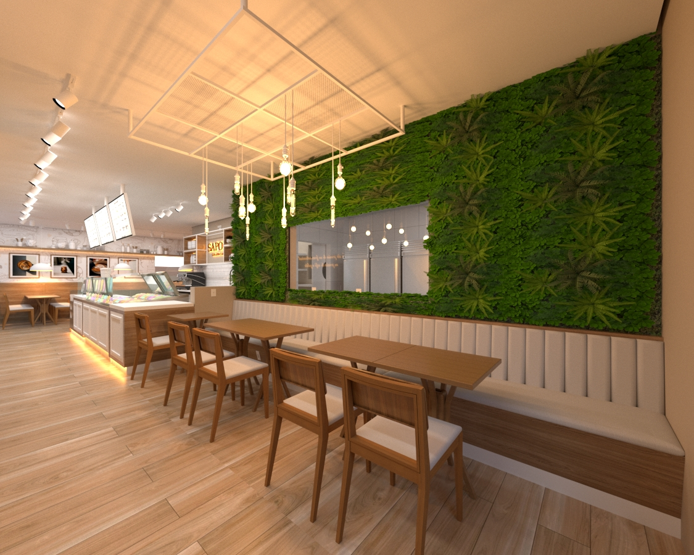
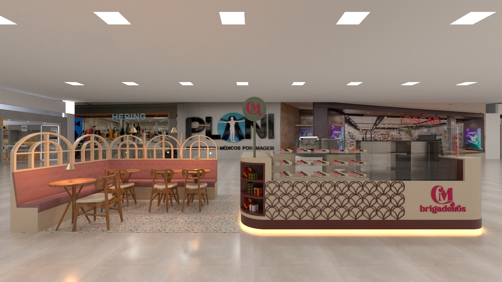
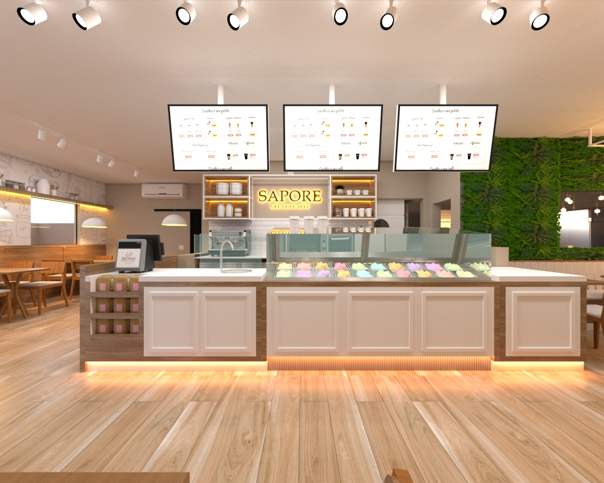
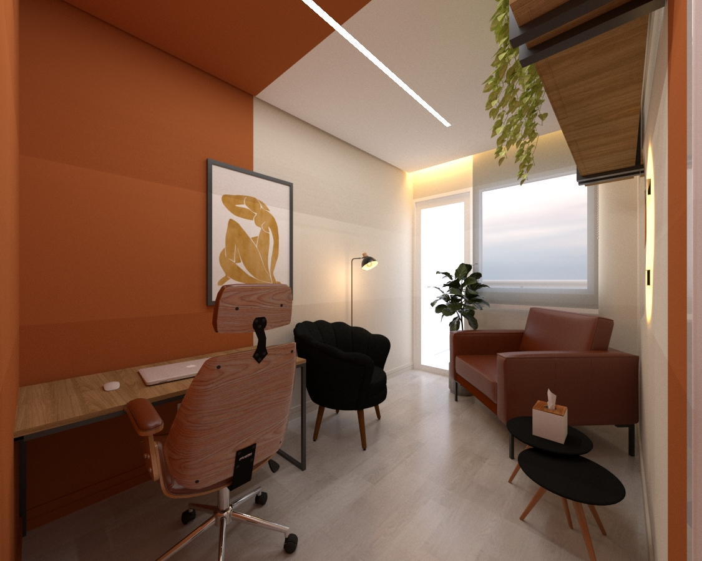
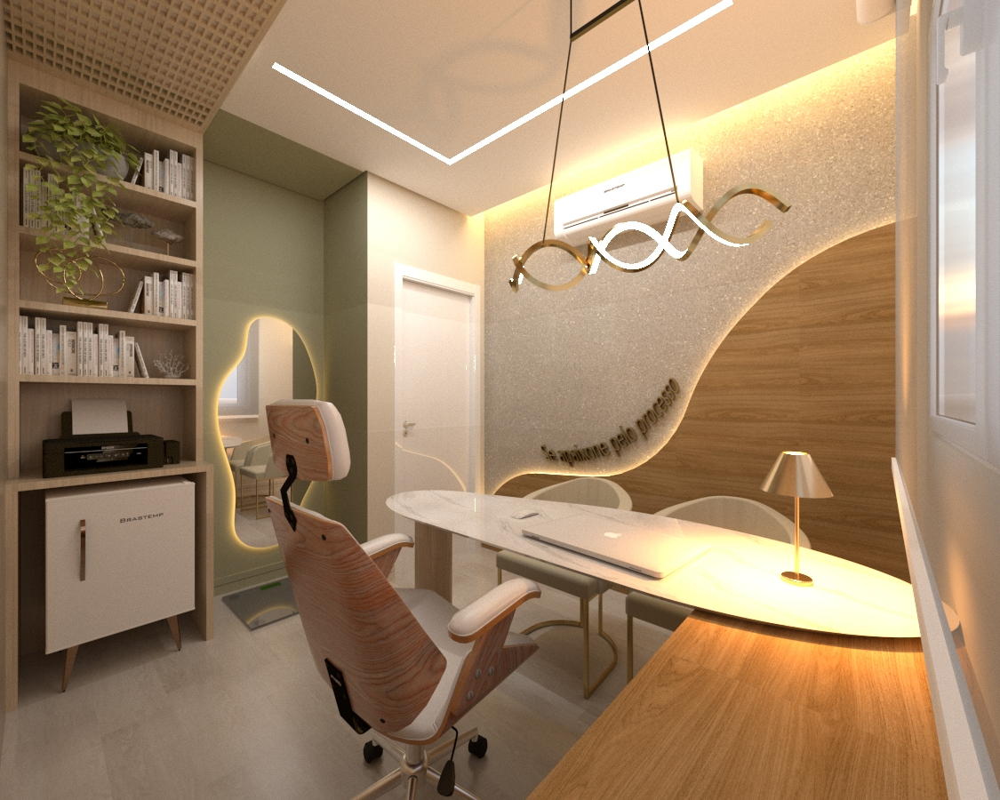

Arquitetura comercial em SJC para cafeterias, restaurantes, hamburguerias, sorveterias e lojas boutique. Projetamos a Sapore Gelato, a Portuga Bake Shop e outros pontos de referência da cidade.
100+ projetos · 7 anos · SJC · Comercial e F&B
Em SJC, o cliente entra na cafeteria e abre o Instagram. Tira foto da mesa, do balcão, do letreiro. Marca o local. Seu ponto vira mídia gratuita. Ou vira só mais um.
Trabalhamos com donos de cafeterias, restaurantes, hamburguerias, sorveterias e lojas boutique que entenderam isso: o espaço não é cenário, é estratégia. É o que faz o cliente voltar, marcar amigos e virar embaixador da marca sem você pedir.

Especialty coffee, hamburgueria autoral, gelateria, restaurante, dark kitchen: projetamos todos os formatos de F&B. Cuidamos do fluxo operacional (cozinha, balcão, salão), da identidade visual integrada à arquitetura e do ponto fotogênico que vira marketing orgânico.
Os projetos da Sapore Gelato Caffè e da Portuga Bake Shop são alguns dos nossos cases mais reconhecidos. Você provavelmente já entrou neles sem saber que projetamos.

O polo Aquarius/Urbanova concentra consultórios médicos, dentistas, fisioterapeutas, esteticistas e clínicas premium: um público que exige espaços com identidade tão refinada quanto o serviço. Também atendemos óticas independentes, lojas autorais, estúdios e kiosks.
Projetamos consultórios boutique, salas clínicas com fluxo otimizado, vitrines de varejo que convertem e áreas de atendimento que diferenciam a experiência. Da CM Brigadeiros (kiosk shopping) a consultórios médicos em torres comerciais do Aquarius.

Loja com identidade visual integrada à arquitetura. Um dos estabelecimentos mais visitados e fotografados de SJC.
Kiosk em shopping com identidade visual forte: paleta rose, detalhes em dourado e operação otimizada.

Paleta terracota com bloco de cor assimétrico, espelho orgânico iluminado e mobiliário aconchegante. Atmosfera intimista para terapia e bem-estar.

Madeira clara, mármore branco, pendente dourado escultural e parede curva assinatura. Estética luxury wellness para o polo médico de SJC.
Marca, materialidade, paleta e iluminação caminham juntas. O espaço comunica o posicionamento do negócio em cada detalhe.
Cozinha, balcão, salão, estoque e atendimento alinhados com a operação real, não só com a foto bonita.
Áreas pensadas para virar conteúdo: o cliente fotografa, marca e divulga. Seu espaço trabalha como mídia 24h.
Você escolhe: equipe Assis Carrer chave na mão ou acompanhamento técnico da sua equipe. Prazo e qualidade garantidos.
Renders, especificações e cotações antes de qualquer compra. Sem surpresa no orçamento.
Sapore, Portuga, CM e outros. Prova social que o cliente já viu funcionando: vai inaugurar em escritório com lastro.
Processo claro, prazos definidos, custos aprovados antes da obra.
Entendemos o negócio, a marca, o público e a operação. Visita técnica e diagnóstico do ponto.
Layout, materiais, identidade visual e renders. Você aprova antes de qualquer compra.
Documentação técnica, cotações, cronograma e aprovações. Tudo pronto para a obra rodar.
Equipe própria ou acompanhamento técnico. Entrega no prazo com book fotográfico de inauguração.
"Já tinha trabalhado com arquiteto antes e a diferença foi grande. O ponto comercial virou parte da nossa marca: cliente entra, tira foto, marca a gente."Carlos R. · Cafeteria em São José dos Campos
Cafeteria, restaurante, loja boutique, kiosk. Conte sobre o negócio: respondemos em até 1 hora em horário comercial com uma estimativa inicial.